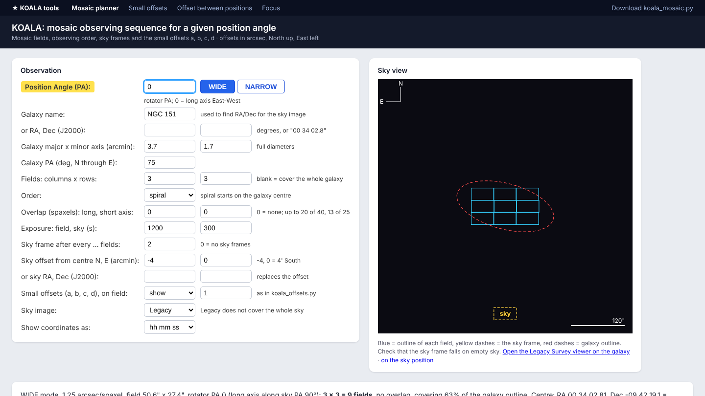
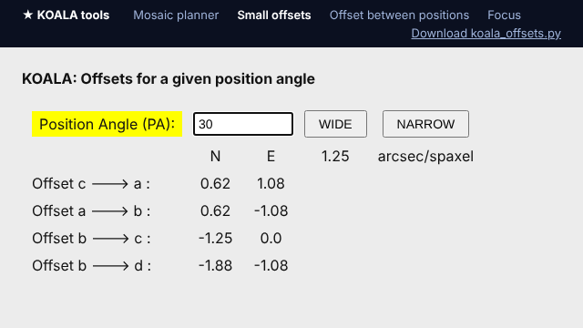
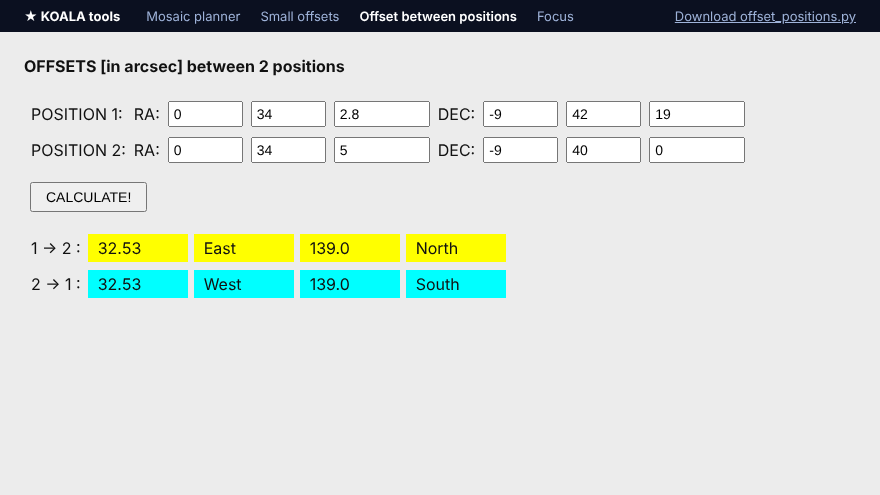
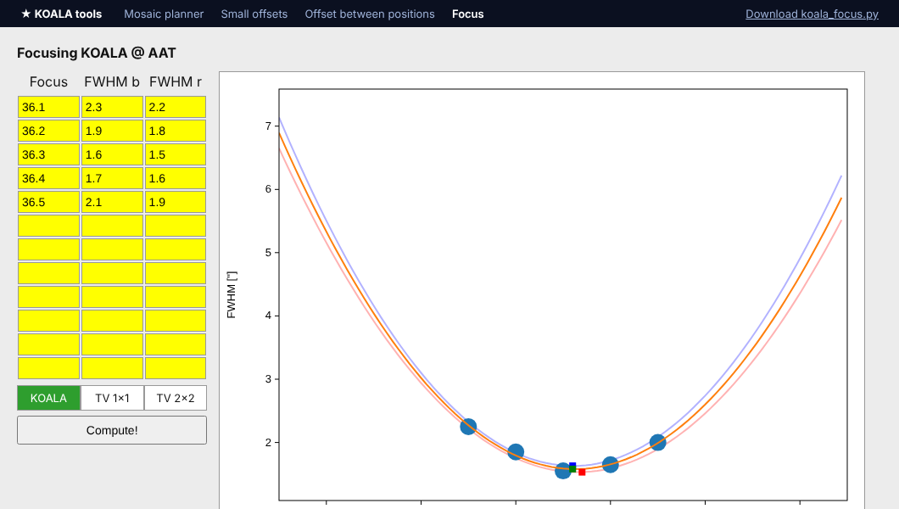

Tools

Mosaic planner new
Tile a galaxy with KOALA fields for a given position angle: the observing order, sky frames, offsets from the centre, RA/Dec of every pointing and the small offsets a, b, c, d drawn over the galaxy.

Small offsets
The offsets c → a, a → b, b → c and b → d in arcsec for a given position angle, in WIDE or NARROW mode.

Offset between two positions
The North/South and East/West offset in arcsec from one RA/Dec to another, and back again.

Focus
Fit a parabola to FWHM measured at several focus values (KOALA blue and red, or the TV camera) to find the best focus and seeing.
Run it on your own computer
- Install Python 3.8 or newer if you do not have it. Nothing else is needed: the tools use only Python’s standard library.
- Download one tool with its Download .py button above, or the whole collection from the repository.
- Run it, and it opens in your web browser:
On Windows usepython3 koala_mosaic.pypython koala_mosaic.py. PressCtrl+Cin the terminal to stop it.
Running it yourself also works at the telescope without internet; only the background sky images and galaxy-name look-up need a connection (positions can always be typed in).
About
The mosaic planner is by Vanshika Kansal. The small-offsets, offset-between-positions and focus tools are adapted from the KOALA observing scripts used at the Anglo-Australian Telescope; the focus script is by Ángel R. López-Sánchez (AAO/MQU). Credit and thanks to their authors.
This is an independent, unofficial collection: it is not run or endorsed by the AAT or its operators. Always check offsets against the telescope’s own procedures before observing.
Position angle convention (all tools): PA counts from North through East; at rotator PA 0 the long axis of the KOALA field runs East–West.